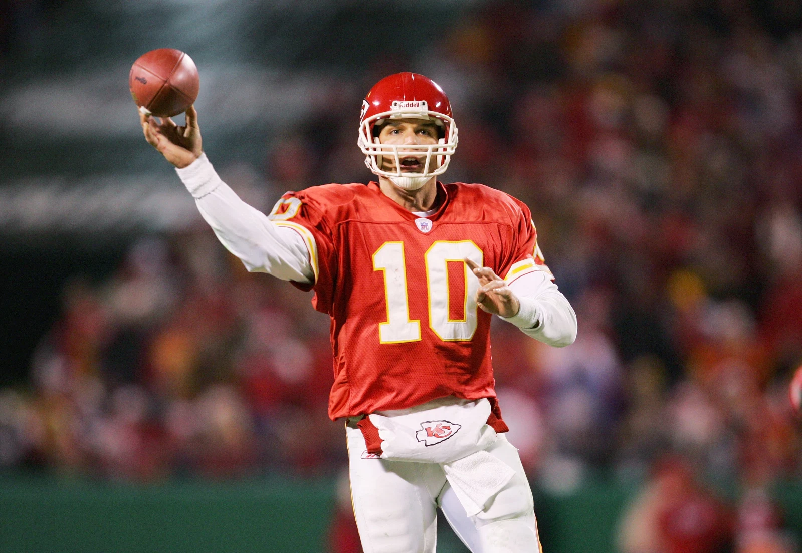

Being from the Kansas City area I have always loved watching the Chiefs. The Chiefs have always been my favorite team even when they were very bad. Now everyone knows the Chiefs as a super team with Patrick Mahomes as the quarterback. I remember when we were a losing team every year and had Matt Casel as a quarterback but I still was always a Chiefs fan and never switched up.
Trent Green my favorite Chiefs quarterback